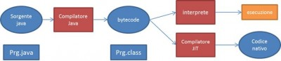

Caratteristiche principali di Java
- Java è un linguaggio orientato agli oggetti, creato da un team guidato da James Gosling a partire dal 1991 e rilasciato dalla Sun Microsystems nel 1995.
- Linguaggio orientato agli oggetti (ereditarietà, polimosfismo, ...)
- Gestione della memoria effettuata automaticamente dal sistema che si occuperà dell'allocazione e della successiva deallocazione della memoria
- La capacità di poter eseguire in programma in piattaforme diverse senza dover essere modificata e ricompilata (portabilità)
Il motivo principale era quello di creare un linguaggio semplice e familiare
Le sue caratteristiche sono:
➥ Caratteristiche di Java
I 5 obiettivi primari nella creazione del linguaggio
- Orientato agli oggetti, semplice e familiare
- Sicuro
- Indipendente dalla piattaforma (gira in tutti i dispositivi che hanno la JDK -> Dava Developement Kit)
- Ad alte prestazioni
- Interpretato, multi-thread, distribuito e dinamico
➥ Orientato agli oggetti
- Orientato agli oggetti dalla base
- In Java tutto è un oggetto
- Incorpora le caratteristiche:
- Incapsulamento
- Polimosfirmo
- Ereditarietà
- Collegamento dinamico
- Non sono disponibili:
- Ereditarietà multipla
- Overload degli operatori
➥ Semplice e familiare
- Basato su C (il linguaggio principale disponibile ad inizio anni 90')
- Sviluppato da zero
- Estramamente semplice: (?)
- senza puntatori, macro, registri
- Apprendimento rapido (?)
- Creato con lo scopo di semplificare la programmazione(?)
- Riduzione del numero di errori (?)
➥ Indipendente dalla piattaforma
- Più efficiente di altri linguaggi interpretati
- Soluzione:
- Macchina Virtuale -> JVM
- Linguaggio macchina bytecode !
➥ Interpretato
- Il bytecode deve essere Interpretato 
- Vantaggi rispetto ad altri linguaggi interpretati:
- Codice più compatto
- Efficiente
- Codice confidenzaiale (non esposto)
➥ Multi-thread
- Soluzione semplice ed elegante per la multiprogrammazione (?)
- Un programma può lanciare differenti processi
- Non si tratta di nuovi processi, condivisono il codice e le variabili con il processo principale
- Simultaneamente si possono svolgere vari compiti
➥ Distribuito e Dinamico
- Disegnato per un'esecuzione remota e distribuita !
- Sistema dinamico !
- Classe collegata quando è richiesta
- Può essere caricata via rete
- Dinamicamente estensibile !
- Disegnato per adattarsi ad ambienti in evoluzione